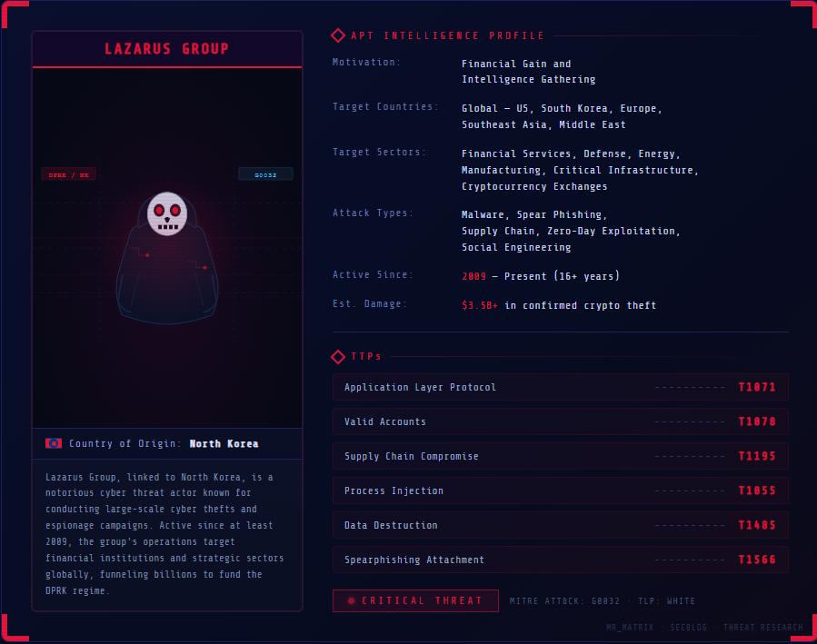

Lazarus Group: Threat Actor Profile
1. Threat Actor Profile — Overview

Lazarus Group
Lazarus Group is a highly sophisticated Advanced Persistent Threat (APT) group widely recognized for conducting cyber espionage, financially motivated cybercrime, and destructive cyber operations. Active since at least 2009, the group has targeted governments, financial institutions, cryptocurrency platforms, defense contractors, software vendors, healthcare organizations, and critical infrastructure across the globe.
Over the past decade, Lazarus has demonstrated exceptional technical capabilities by developing custom malware families, conducting complex supply chain compromises, exploiting zero-day vulnerabilities, and executing large-scale financial theft campaigns. Unlike many threat actors that specialize in a single objective, Lazarus conducts operations spanning espionage, sabotage, ransomware deployment, and cryptocurrency theft, making it one of the most versatile and persistent nation-state threat groups currently active.
The group's operations continue to evolve alongside advancements in cybersecurity defenses. Lazarus frequently updates its malware, command-and-control infrastructure, and operational techniques to evade detection and maintain long-term access to compromised environments.
2. Aliases
Due to independent tracking by multiple cybersecurity vendors and government agencies, Lazarus Group is known under several aliases. Although the naming conventions differ between organizations, these aliases generally refer to the same threat actor or closely related operational clusters.

Figure: Cross-vendor alias mapping for Lazarus Group
| ORGANIZATION | ALIAS |
|---|---|
| MITRE ATT&CK | Lazarus Group (G0032) |
| Microsoft | Diamond Sleet (formerly DEV-0056 / ZINC) |
| CISA / US Government | Hidden Cobra |
| Kaspersky | Lazarus |
| ESET | Lazarus |
| CrowdStrike | Labyrinth Chollima |
| Mandiant / Google Threat Intelligence | UNC and cluster-specific designations for particular campaigns |
| Malpedia | APT38, APT-C-26, ATK117, ATK3, Alluring Pisces, Andariel, Appleworm, BeagleBoyz, Black Artemis |
Certain financially motivated operations are also tracked separately under names such as APT38, while specific operational subgroups — including Andariel and BlueNoroff — are often analyzed independently because of their specialized missions and malware toolsets.
3. Attribution
Lazarus Group is widely attributed to the Democratic People's Republic of Korea (DPRK) and is assessed by numerous governments and cybersecurity organizations to operate in support of North Korean strategic interests. This attribution is based on years of technical analysis, intelligence reporting, and the correlation of operational behaviors across multiple campaigns.
Evidence supporting this attribution includes:
- Consistent reuse of malware code across independent campaigns.
- Shared command-and-control infrastructure and operational patterns.
- Similar encryption, obfuscation, and malware development techniques.
- Overlapping tactics, techniques, and procedures (TTPs).
- Infrastructure reuse observed over several years.
- Victim selection aligned with North Korean political, military, and financial objectives.
- Public attribution statements issued by government agencies following major cyber incidents.
While attribution in cyberspace is inherently challenging, the collective body of technical and intelligence evidence provides a high level of confidence that Lazarus operates as a North Korean state-sponsored threat actor.

The FBI formally indicted Park Jin Hyok, a North Korean operative linked to Lazarus Group, for conspiracy to commit wire fraud and computer-related fraud. The indictment attributes his involvement to several high-profile cyber operations, including the Sony Pictures attack, the WannaCry ransomware outbreak, and multiple cryptocurrency theft campaigns.
Publicly attributed financial operations include the $81M Bangladesh Bank heist, $625M Axie Infinity compromise, $100M Harmony Bridge theft, $41M Stake breach, and the $1.5B Bybit compromise, demonstrating Lazarus Group's continued focus on funding state-sponsored operations through cyber-enabled financial theft.

The Lazarus Group name was coined by Greg Sinclair, a reverse engineer from Google's FLARE team. While reverse engineering malware samples tied to a series of attacks, Sinclair found shared code and fingerprints across seemingly unrelated incidents, linking them to a single North Korean threat actor. His work established the forensic foundation for what is now recognized as one of the most active nation-state APTs in the world.
4. Historical Timeline
The operational history of Lazarus Group illustrates a gradual evolution from regional cyber espionage campaigns to globally significant cyber operations targeting governments, financial institutions, and cryptocurrency ecosystems.
| YEAR | ACTIVITY |
|---|---|
| 2009–2013 | Early cyber espionage and disruptive operations primarily targeting South Korean government agencies, media organizations, and financial institutions. |
| 2014 | Conducted the destructive cyberattack against Sony Pictures Entertainment, gaining worldwide attention. |
| 2015 | Expanded malware development and reconnaissance operations targeting defense contractors and government organizations. |
| 2016 | Attempted the Bangladesh Bank SWIFT heist, seeking to steal nearly one billion US dollars through fraudulent international transactions. |
| 2017 | Linked to the global WannaCry ransomware outbreak that impacted hundreds of thousands of systems across more than 150 countries. |
| 2018–2020 | Increased focus on cryptocurrency exchanges, digital asset platforms, and blockchain companies through campaigns such as AppleJeus and APT38 operations. |
| 2021–2022 | Continued targeting cryptocurrency organizations, software developers, and defense industries while introducing new malware variants and advanced social engineering techniques. |
| 2023–Present | Conducted sophisticated supply chain attacks, software compromises, and financially motivated operations targeting cryptocurrency companies and enterprise software vendors. |
This progression demonstrates Lazarus Group's ability to rapidly adapt its objectives and technical capabilities in response to evolving geopolitical priorities and emerging technologies.
5. Objectives & Motivation
Lazarus Group conducts cyber operations that support multiple strategic objectives rather than focusing on a single mission. Its activities generally fall into three primary categories: cyber espionage, financial theft, and disruptive operations.
Financially motivated campaigns have become increasingly prominent in recent years, with the group targeting banks, cryptocurrency exchanges, decentralized finance (DeFi) platforms, and blockchain organizations to generate revenue. These operations are widely believed to support North Korea's efforts to obtain foreign currency despite international economic sanctions.
In parallel, Lazarus continues to conduct intelligence-gathering operations against government agencies, military organizations, defense contractors, research institutions, and technology companies. These campaigns are designed to collect sensitive information, support strategic decision-making, and maintain long-term access to targeted networks.
The group has also demonstrated the capability to conduct destructive cyberattacks, deploy ransomware, compromise software supply chains, and execute complex social engineering campaigns. This diverse operational portfolio distinguishes Lazarus from many other threat actors and reflects a mature organization capable of adapting its techniques to achieve a wide range of strategic objectives.

In 2025 alone, Lazarus Group was responsible for an estimated $1.66 billion in confirmed or suspected cryptocurrency theft — accounting for approximately 60% of all crypto stolen globally that year. Major incidents include the Bybit multisig social engineering attack ($1.4B, FBI confirmed), Phemex hot wallet drain ($73M), BtcTurk private key leak ($48M), CoinDCX server compromise ($44M), and several others. This scale of financially motivated activity underscores the group's central role in funding North Korean state operations.
6. Campaigns
Lazarus Group has conducted numerous cyber operations spanning financial theft, cyber espionage, ransomware, and supply chain compromises. Over the years, the group's campaigns have evolved from primarily targeting government organizations in East Asia to conducting global operations against financial institutions, cryptocurrency exchanges, software vendors, and technology companies. The following summarizes the most significant publicly reported campaigns attributed to Lazarus Group, beginning with the most recent.
Bybit Cryptocurrency Heist (2025)
In February 2025, Lazarus Group was attributed to the compromise of the cryptocurrency exchange Bybit, resulting in the theft of approximately 1.5 billion USD in Ethereum-related assets. The incident is regarded as the largest cryptocurrency theft publicly reported to date.
Investigations indicated that the attackers compromised elements of the transaction-signing workflow associated with third-party wallet infrastructure, enabling fraudulent transactions to be approved while appearing legitimate. Following the theft, the stolen assets were rapidly moved through multiple wallets and laundering services to hinder recovery efforts.
Objectives: Cryptocurrency theft · Supply chain compromise · Financial gain · Cryptocurrency laundering

Figure: On-chain tracing of stolen Bybit funds moving through exploiter wallets (TRM Labs)

The Lazarus Group's financial campaigns continued beyond Bybit, with the group reportedly breaching Bitrefill, draining hot wallets and compromising information belonging to approximately 18,500 customers. The operation is consistent with Lazarus's pattern of targeting cryptocurrency infrastructure through insider-aware attack methods. The same FBI WANTED poster for Park Jin Hyok was displayed at a press conference announcing related indictments.
Open-Source Package Supply Chain Campaigns (2025–Present)
Lazarus Group expanded its software supply chain operations by publishing malicious packages to popular open-source ecosystems such as npm and PyPI. These packages impersonated legitimate libraries or were distributed through malicious GitHub repositories targeting developers.
The malware primarily targeted developers working on cryptocurrency, blockchain, and Web3 projects. Once installed, the packages deployed backdoors, harvested credentials, and established persistent access to developer workstations.

Researchers identified Lazarus Group hiding inside npm dependencies disguised as Rollup polyfill tools. Once silently installed, the malicious packages perform sandbox checks, establish full remote access, and steal SSH keys, cryptocurrency wallets, and cloud config files (Claude/AWS configs). The end-to-end flow: silent install → dropper (JSONKeeper eval) → encrypted C2 fetch/decode → browser theft (logins & wallets) → file collection (secrets and histories). Seven supply chain attacks of this type were discovered in a single week.
Objectives: Supply chain compromise · Developer workstation compromise · Credential theft · Initial access to enterprise networks
Contagious Interview Campaign (2024–Present)
The Contagious Interview campaign targets software developers, cybersecurity professionals, and cryptocurrency employees using fake recruiter profiles on platforms including LinkedIn, Telegram, and X.
Victims are invited to complete coding challenges or technical interviews using malicious projects hosted on GitHub or other code-sharing platforms. Executing the supplied projects installs malware capable of stealing credentials, collecting sensitive information, and providing remote access to compromised systems.
Objectives: Social engineering · Initial access · Credential theft · Compromise of software developers

Figure: Fake recruiter profile ("Onder Kayabasi") advertising blockchain developer roles on X, used to lure victims into the Contagious Interview campaign
"Mach-O Man" macOS Malware Campaign (2025)
A 2025 Lazarus campaign targeted macOS users through a trojanized video conferencing application update. The malware kit, dubbed PyLangGhostRAT, is a Python-based remote access trojan — a port of the original Go-based GhostRAT — distributed via ClickFix-style social engineering that tricks users into approving a fake "Update Completed" installation dialog.
Once installed, the malware establishes persistent remote access, enabling credential theft, file collection, and long-term surveillance of macOS workstations. The campaign marks a continued expansion of Lazarus's targeting beyond Windows environments.

Researchers reported a new Lazarus APT campaign: "Mach-O Man" distributing PyLangGhostRAT, a Python-based vibe-ported version of the original Go-based RAT using ClickFix attacks. The malware disguises itself as a Teams application update on macOS, then establishes a full C2 channel visible in the Any.run sandbox analysis. The campaign targets macOS business users and represents Lazarus's active investment in cross-platform malware development.
Objectives: Remote access · Credential theft · Surveillance · macOS platform expansion
Fake IT Worker Campaign (2024–Present)

Figure: How North Korean IT workers carry out the fake-employment scheme (Google Cloud)
Lazarus Group has also been linked to campaigns in which North Korean operatives pose as remote software engineers seeking employment with international technology companies. After obtaining legitimate employment, they gain trusted access to corporate environments where they can steal intellectual property, deploy malware, or generate revenue for the North Korean regime.
Unlike traditional cyberattacks, this operation combines identity fraud, insider access, and cyber intrusion techniques, making it particularly difficult to detect.
Objectives: Insider access · Intellectual property theft · Financial gain · Long-term enterprise access
WazirX Cryptocurrency Exchange Attack (2024)
In July 2024, the Indian cryptocurrency exchange WazirX suffered a security breach that resulted in the theft of approximately 235 million USD in digital assets. Public blockchain investigations linked the operation to Lazarus Group.
The attackers compromised wallet infrastructure before laundering the stolen cryptocurrency through multiple blockchain transactions and cryptocurrency mixing services.
Objectives: Cryptocurrency theft · Financial gain · Cryptocurrency laundering

Figure: WazirX security breach coverage following the 2024 exchange compromise
3CX Supply Chain Attack (2023)
The compromise of the 3CX Desktop Application represented one of Lazarus Group's most sophisticated software supply chain attacks. By infiltrating the software development process, the attackers distributed digitally signed malicious updates to thousands of organizations worldwide. The campaign demonstrated Lazarus's ability to abuse trusted software distribution channels to obtain initial access into downstream enterprise environments. This campaign is analyzed in full technical detail in the sections below.
Objectives: Supply chain compromise · Malware distribution · Intelligence collection · Long-term persistence

Figure: End-to-end 3CX supply chain attack flow, from build server compromise to in-memory payload delivery (Sophos)
Operation AppleJeus (2018–Present)
Operation AppleJeus targeted cryptocurrency users through trojanized cryptocurrency trading applications masquerading as legitimate investment software. Victims who installed these applications unknowingly deployed malware capable of collecting sensitive information, maintaining persistence, and stealing cryptocurrency assets from infected systems.
Objectives: Cryptocurrency theft · Credential harvesting · Remote access · Financial gain

Figure: AppleJeus loader and C2 architecture — encrypted config files loaded by a .NET loader, with a port opener and tunneling tool enabling remote command and control
WannaCry Ransomware (2017)
The WannaCry ransomware outbreak spread rapidly across more than 150 countries by exploiting the EternalBlue (MS17-010) SMB vulnerability. The malware encrypted victim systems and demanded cryptocurrency payments for decryption. Although the financial return was relatively modest, the attack caused widespread disruption to hospitals, government agencies, educational institutions, and private organizations around the world.
Objectives: Ransomware deployment · Rapid worm propagation · Operational disruption

Figure: The WannaCry "Wana Decrypt0r 2.0" ransom note displayed on infected systems
Bangladesh Bank Heist (2016)
Lazarus Group compromised Bangladesh Bank's internal network and abused the SWIFT banking system to initiate fraudulent international money transfers totaling nearly one billion US dollars. Although most transactions were blocked, approximately 81 million USD was successfully transferred before the fraud was detected, making it one of the most significant cyber-enabled financial thefts ever recorded.
Objectives: Financial theft · SWIFT fraud · Banking infrastructure compromise

Figure: The 2016 Bangladesh Bank heist abused the SWIFT interbank messaging system to move stolen funds

Blockchain investigator ZachXBT documented Lazarus Group moving approximately $63.5M (~41,000 ETH) from the Harmony bridge hack through the Railgun privacy protocol before consolidating funds into three separate exchanges. The on-chain analysis revealed a complex multi-hop laundering pattern: Tornado Cash withdrawals → Railgun deposits → Railgun withdrawals → consolidation wallets → exchange deposits across three separate exchanges. This visualization illustrates the group's sophisticated cryptocurrency laundering infrastructure and tradecraft.
Sony Pictures Attack (2014)
The cyberattack against Sony Pictures Entertainment marked one of the first operations to bring Lazarus Group to international attention. The attackers stole confidential corporate data, leaked internal communications, and deployed destructive malware that permanently damaged thousands of systems. The campaign demonstrated Lazarus Group's ability to conduct long-term network intrusions followed by coordinated destructive attacks against enterprise environments.
Objectives: Data theft · Corporate disruption · Destructive malware deployment · Psychological impact

Figure: The "Hacked By #GOP" message displayed on compromised Sony Pictures workstations during the 2014 attack
References
- Mandiant / Google Cloud – 3CX Software Supply Chain Compromise Initiated by a Previous Software Supply Chain Compromise
- Google Cloud Threat Intelligence – 3CX Supply Chain Compromise: Follow-on Activity
- SentinelOne – 3CX Supply Chain Attack Analysis
- CrowdStrike – 3CX DesktopApp Supply Chain Compromise
- Elastic Security Labs – 3CX Supply Chain Attack Research
- Sophos X-Ops – 3CX Supply Chain Attack Analysis
- Kaspersky Securelist – Gopuram Backdoor Deployed Through the 3CX Supply Chain Attack
- MITRE ATT&CK – Lazarus Group (G0032)